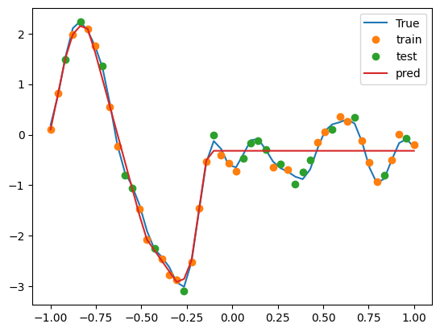
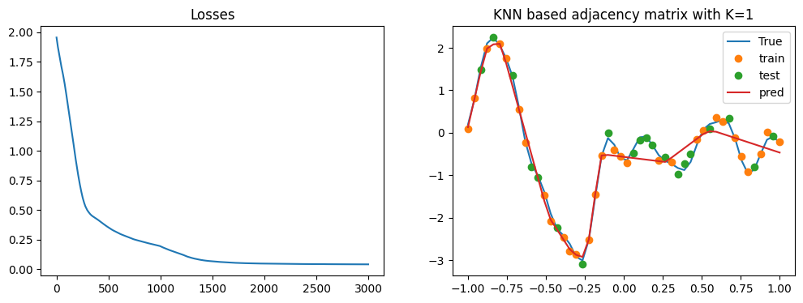

import os
os.environ["CUDA_VISIBLE_DEVICES"] = "3"
import GPy
import torch
import torch.nn as nn
from tqdm import trange
import numpy as np
import matplotlib.pyplot as plt
from sklearn.model_selection import train_test_split
device = "cuda"Create a synthetic dataset
np.random.seed(0)
torch.random.manual_seed(4)
N = 50
x = np.linspace(-1, 1, N).reshape(-1, 1)
kernel = GPy.kern.RBF(input_dim=1, variance=1, lengthscale=0.1)
y = np.random.multivariate_normal(np.zeros(N), kernel.K(x)).reshape(-1, 1)
y_noisy = y + np.random.normal(0, 0.1, N).reshape(-1, 1)
train_x, test_x, train_y, test_y = train_test_split(x, y_noisy, test_size=0.4, random_state=0)
plt.plot(x, y, label="True");
plt.plot(train_x, train_y, 'o', label='train')
plt.plot(test_x, test_y, 'o', label='test')
plt.legend();
x, y, y_noisy = map(lambda x: torch.tensor(x).float().to(device), (x, y, y_noisy))
train_x, test_x, train_y, test_y = map(lambda x: torch.tensor(x).float().to(device), (train_x, test_x, train_y, test_y))
print(x.shape, y.shape, y_noisy.shape)torch.Size([50, 1]) torch.Size([50, 1]) torch.Size([50, 1])
Fit with a simple MLP
def fit(model, x, y, A=None, lr=0.01, epochs=100):
optimizer = torch.optim.Adam(model.parameters(), lr=lr)
loss_fn = nn.MSELoss()
if A is None:
inputs = (x,)
else:
inputs = (x, A)
losses = []
pbar = trange(epochs)
for epoch in pbar:
optimizer.zero_grad()
y_hat = model(*inputs)
loss = loss_fn(y_hat, y)
losses.append(loss.item())
pbar.set_description(f"Epoch {epoch} Loss: {loss.item()}")
loss.backward()
optimizer.step()
return losses
class SimpleMLP(nn.Module):
def __init__(self, features):
super().__init__()
layers = [nn.Linear(1, features[0]), nn.ReLU()]
for in_features, out_features in zip(features, features[1:]):
layers.append(nn.Linear(in_features, out_features))
layers.append(nn.ReLU())
layers.append(nn.Linear(features[-1], 1))
self.layers = nn.Sequential(*layers)
def forward(self, x):
return self.layers(x)torch.manual_seed(0)
model = SimpleMLP([10, 10, 10]).to(device)
fit(model, train_x, train_y, lr=0.01, epochs=1000);
pred_y = model(x)
(x_, y_, train_x_, train_y_, test_x_, test_y_, pred_y_) = map(lambda x: x.cpu().detach().numpy(), (x, y, train_x, train_y, test_x, test_y, pred_y))
plt.plot(x_, y_, label="True");
plt.plot(train_x_, train_y_, 'o', label='train')
plt.plot(test_x_, test_y_, 'o', label='test')
plt.plot(x_, pred_y_, label='pred')
plt.legend();Epoch 999 Loss: 0.07143261283636093: 100%|██████████| 1000/1000 [00:02<00:00, 410.79it/s]
Create a GCN layer
class GCNLayer(nn.Module):
def __init__(self, in_features, out_features):
super().__init__()
self.linear = nn.Linear(in_features, out_features)
def forward(self, x, A):
return self.linear(A @ x)
class GCN(nn.Module):
def __init__(self, features):
super().__init__()
layers = [GCNLayer(1, features[0]), nn.ReLU()]
for in_features, out_features in zip(features, features[1:]):
layers.append(GCNLayer(in_features, out_features))
layers.append(nn.ReLU())
layers.append(nn.Linear(features[-1], 1))
self.layers = nn.Sequential(*layers)
def forward(self, x, A):
for layer in self.layers:
if isinstance(layer, GCNLayer):
x = layer(x, A)
else:
x = layer(x)
return x
def get_eucledean_A(x, exponent):
d = ((x - x.T)**2)**0.5
d = torch.where(d==0, torch.min(d[d!=0])/2, d) # self distance is 0, so replace it with half of the min distance
A = 1/(d**exponent)
return A/A.sum(dim=1, keepdim=True)
def get_KNN_A(x, k):
d = torch.abs(x - x.T)
A = torch.zeros_like(d)
_, indices = torch.topk(d, k, dim=1, largest=False)
for i, index in enumerate(indices):
A[i, index] = 1
return A/A.sum(dim=1, keepdim=True)
def fit_and_plot(title):
model = GCN([10, 10, 10]).to(device)
losses = fit(model, train_x, train_y, A=A_train, lr=0.001, epochs=3000);
pred_y = model(x, A_all)
fig, ax = plt.subplots(1, 2, figsize=(12, 4))
axes = ax[0]
axes.plot(losses)
axes.set_title("Losses")
(x_, y_, train_x_, train_y_, test_x_, test_y_, pred_y_) = map(lambda x: x.cpu().detach().numpy(), (x, y, train_x, train_y, test_x, test_y, pred_y))
axes = ax[1]
axes.plot(x_, y_, label="True");
axes.plot(train_x_, train_y_, 'o', label='train')
axes.plot(test_x_, test_y_, 'o', label='test')
axes.plot(x_, pred_y_, label='pred')
axes.set_title(title)
axes.legend();IDW setting
exponent = 1
A_train = get_eucledean_A(train_x, exponent).to(device)
A_all = get_eucledean_A(x, exponent).to(device)
title = f"Distance based adjacency matrix with exponent {exponent}"
fit_and_plot(title)Epoch 2999 Loss: 0.05447980388998985: 100%|██████████| 3000/3000 [00:07<00:00, 390.93it/s] exponent = 2
A_train = get_eucledean_A(train_x, exponent).to(device)
A_all = get_eucledean_A(x, exponent).to(device)
title = f"Distance based adjacency matrix with exponent {exponent}"
fit_and_plot(title)Epoch 2999 Loss: 0.06475391983985901: 100%|██████████| 3000/3000 [00:07<00:00, 413.49it/s]exponent = 3
A_train = get_eucledean_A(train_x, exponent).to(device)
A_all = get_eucledean_A(x, exponent).to(device)
title = f"Distance based adjacency matrix with exponent {exponent}"
fit_and_plot(title)Epoch 2999 Loss: 0.043554823845624924: 100%|██████████| 3000/3000 [00:08<00:00, 367.28it/s]KNN Setting
K = 1
A_train = get_KNN_A(train_x, K).to(device)
A_all = get_KNN_A(x, K).to(device)
title = f"KNN based adjacency matrix with K={K}"
fit_and_plot(title)Epoch 2999 Loss: 0.04107221961021423: 100%|██████████| 3000/3000 [00:07<00:00, 383.88it/s] 
K = 3
A_train = get_KNN_A(train_x, K).to(device)
A_all = get_KNN_A(x, K).to(device)
title = f"KNN based adjacency matrix with K={K}"
fit_and_plot(title)Epoch 2999 Loss: 0.14372628927230835: 100%|██████████| 3000/3000 [00:07<00:00, 404.74it/s]
K = 7
A_train = get_KNN_A(train_x, K).to(device)
A_all = get_KNN_A(x, K).to(device)
title = f"KNN based adjacency matrix with K={K}"
fit_and_plot(title)Epoch 2999 Loss: 0.13950258493423462: 100%|██████████| 3000/3000 [00:07<00:00, 381.66it/s]K = 15
A_train = get_KNN_A(train_x, K).to(device)
A_all = get_KNN_A(x, K).to(device)
title = f"KNN based adjacency matrix with K={K}"
fit_and_plot(title)Epoch 2999 Loss: 0.33879855275154114: 100%|██████████| 3000/3000 [00:07<00:00, 376.56it/s]